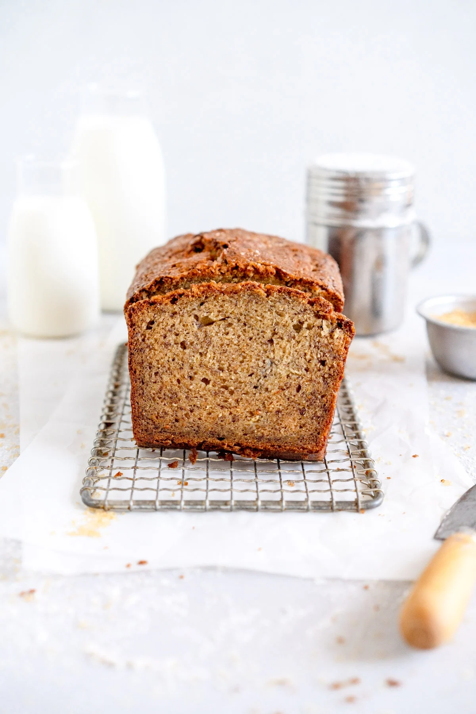

Banana Bread

Description
Lovely banana bread recipe - a great way to use leftover bananas!
Ingredients
- 115g butter, at room temperature
- 3 bananas, very ripe
- 2 large eggs
- 190g flour
- 200g sugar
- 1 tsp baking soda
- 1/2 tsp baking powder
- 1/2 tsp salt
Steps
- Preheat oven to 350°f (180°C), and grease a loaf tin
- Cream the butter and banana together until light and fluffy
- Add the eggs one at a time
- Add the vanilla and mix well
- Mix the dry ingredients in a separate bowl
- Add the dry ingredients to the creamed mixture, mix until just combined
- Pour batter into loaf tin, and bake for 50-60 minutes.